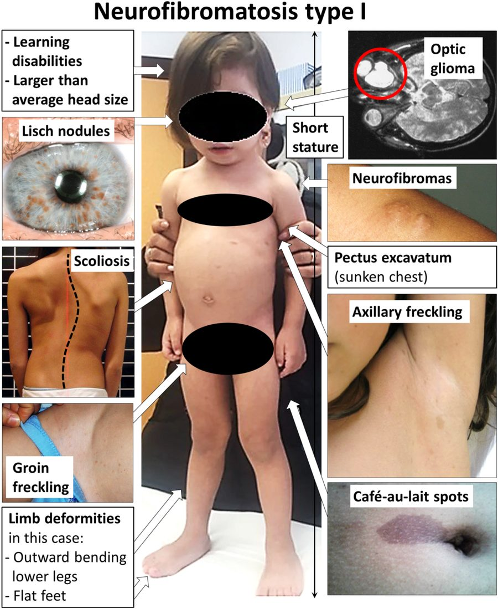

General information only. It does not replace advice from a health professional or genetic counselling.
At a glance
| Gene | NF1, chromosome 17 (the protein neurofibromin) |
| Inheritance | Autosomal dominant; half of cases are new, with no family history |
| Frequency | About 1 in 3,000 people |
| Typical features | Café-au-lait spots, freckles in the armpits and groin, neurofibromas, Lisch nodules in the iris |
| Treatment | Follow-up in specialist clinics; selumetinib for plexiform neurofibromas |


What it is
Neurofibromatosis type 1 (NF1), formerly known as von Recklinghausen disease after the German pathologist who described it in 1882, is a genetic condition that mainly affects the skin, the nervous system and the bones. Its best-known feature is neurofibromas: benign tumours that grow on the sheaths of nerves.
It is a highly variable condition. Some people have only a few skin spots all their lives; others develop serious complications. This variability occurs even among members of the same family who share exactly the same variant.
Cause: a brake that fails
The NF1 gene makes neurofibromin, a protein that acts as a tumour suppressor: it puts the brake on a signalling pathway called RAS-MAPK, which tells cells to grow and divide. When neurofibromin is missing, that "accelerator" is pressed down too much.
People with NF1 are born with one altered copy of the gene in all their cells. Tumours appear when, by chance, a cell also loses the other copy, the "second hit", the same idea that explains hereditary cancer.
Inheritance is autosomal dominant: each child of an affected person has a 50 % chance of inheriting it. But around half of cases1 are due to a new variant (de novo) that neither parent had. The NF1 gene is large and has one of the highest mutation rates in the human genome. Sometimes the variant arises after fertilisation and affects only part of the body: this is mosaic, or segmental, NF1.
Signs and symptoms
- Café-au-lait spots: flat, light-brown patches that appear in the first years of life. Six or more are a diagnostic criterion.
- Freckles in the armpits and groin, an unusual place for freckles.
- Lisch nodules: small harmless bumps on the iris, visible with a slit lamp.
- Cutaneous neurofibromas: soft lumps in the skin that usually appear in adolescence and increase with age and pregnancy. They are benign, but can be numerous and greatly affect self-esteem.
- Plexiform neurofibromas: larger tumours that grow along deep nerves. About 30–50 % of people1 have them, and they can cause pain, disfigurement or pressure on organs.
- Optic pathway gliomas: tumours of the optic nerve in about 15 % of children1, almost always without symptoms. This is why children have yearly eye checks.
- Learning and attention difficulties: these occur in more than half of children, along with higher rates of ADHD and autistic traits.
- Bones: scoliosis, changes in the shin bone (which can bow and break) and somewhat short stature.
- High blood pressure and, rarely, other tumours.
Risks to watch for
The most serious risk is the transformation of a plexiform neurofibroma into a malignant peripheral nerve sheath tumour (MPNST), which occurs in 8–13 % of people1 over their lifetime. New, persistent pain, rapid growth or a change in the feel of a tumour should be checked promptly. Women with NF1 also have a higher risk of breast cancer before 50, so earlier mammograms or MRI scans are recommended.
Diagnosis
Diagnosis is based on clinical criteria, updated by an international consensus in 20212. At least two features are needed, including six or more café-au-lait spots, freckling in skin folds, two or more neurofibromas or one plexiform, an optic glioma, Lisch nodules, certain bone lesions, or a pathogenic variant in NF1. If a parent has NF1, one feature in the child is enough.
Genetic testing finds the variant in more than 95 % of cases1. It is useful when the picture is unclear, especially in young children who have only spots, and to distinguish NF1 from Legius syndrome (gene SPRED1), which causes spots and freckles but no tumours.
Treatment
There is no cure, but organised follow-up in experienced clinics improves the lives of people with NF1: yearly checks of the skin, eyesight, spine, blood pressure and school progress.
- Selumetinib: a MEK inhibitor, blocking one part of the RAS-MAPK pathway. In 2020 it became the first drug approved3 in the United States (in the European Union, in 2021) for children with symptomatic plexiform neurofibromas that cannot be operated on. In the trial, the tumour shrank in about two thirds of children, with less pain. Its use has since been extended to adults, and in 2025 another MEK inhibitor, mirdametinib, was approved.
- Surgery: for neurofibromas that cause problems or disfigurement, and for suspicious tumours.
- Laser or electrosurgery for cutaneous neurofibromas.
- School and psychological support, very important in childhood.
What to ask at your appointment
Questions you can take with you. Not all of them will have an answer on day one, and your care team may add others.
- How often are eye, blood pressure, skin and development checks needed?
- Are there plexiform neurofibromas, and is a MEK inhibitor an option?
- Which symptoms should prompt us to see a doctor without waiting for the next check-up?
- What support at school might be needed?
- Is the variant new or inherited, and what is the risk for other children?
Where to learn more
- Nerve Tumours UK
- Children's Tumor Foundation
- Orphanet: neurofibromatosis type 1
See also: Hereditary cancer, Inheritance patterns and Mutations and variants.
Sources
- Gutmann DH, Ferner RE, Listernick RH, Korf BR, Wolters PL, Johnson KJ. Neurofibromatosis type 1. Nat Rev Dis Primers. 2017;3:17004. doi:10.1038/nrdp.2017.4
- Legius E, Messiaen L, Wolkenstein P, et al. Revised diagnostic criteria for neurofibromatosis type 1 and Legius syndrome: an international consensus recommendation. Genet Med. 2021;23(8):1506-1513. doi:10.1038/s41436-021-01170-5
- Gross AM, Wolters PL, Dombi E, et al. Selumetinib in children with inoperable plexiform neurofibromas. N Engl J Med. 2020;382(15):1430-1442. doi:10.1056/NEJMoa1912735